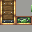

大转向架：列车底盘上的大轮组件。
参数
来源列车装配生成
规格大号轮组
详细教程
怎么获得
它在生存里没有工作台配方，不是玩家合成出来的物品，而是列车装配时出现在底盘上的结构件；在创造模式里对着它取方块，拿到的是列车机壳，正好说明它属于装配生成物。
想做列车请从列车机壳、列车轨道、转向架这套结构件入手，先在轨道上摆好底盘再装配，别在物品栏里找它的配方。
怎么用
转向架就是列车的轮组：大号转向架的轮径更大（12.5/16 格），轮距 2 格，装配出来的车厢底盘更高、轮子更显眼，视觉上更像重型机车或货运车厢。
一节车厢至少要有一组转向架才能上路，两组才稳；装配时把底盘与转向架对齐在轨道上，装配器才能把整列车认成一体。
搭配
配列车机壳做车体、配列车门与列车活板门做出入口，再用列车站台与列车信号管调度，一列车的基本件就齐了。
大转向架更适合长车厢：车厢越长，轮组承受的视觉重量越要够，小轮子配长车身会显得头重脚轻；先定车厢长度，再决定用大号还是普通转向架。
获取方式
这个物品没有合成配方：它由工具或机器直接生成/放置（例如用扳手、连接器、部署器，或作为其他配方的产物）。具体见上方教程。